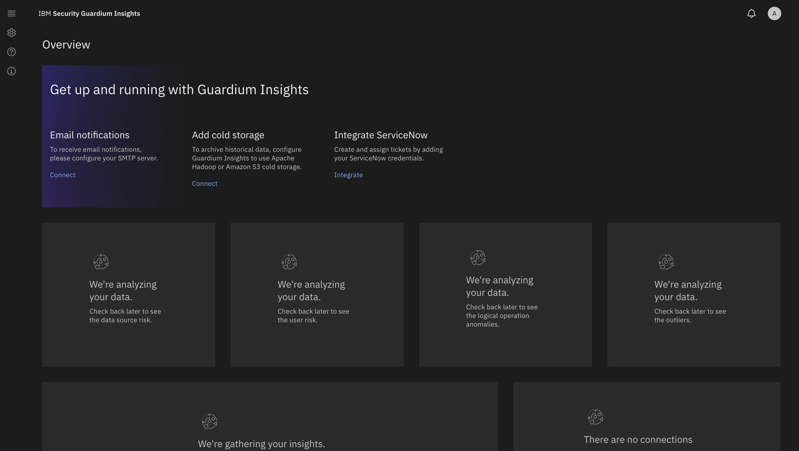
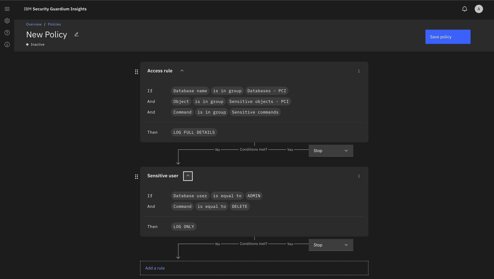
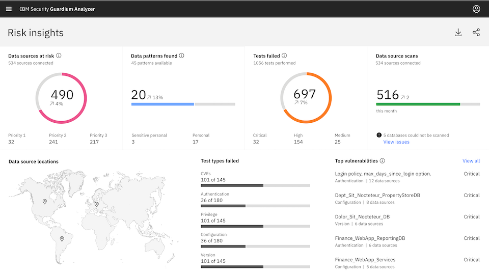

Case study · 2018 — 2021
Guardium protects enterprise data — risk analysis, anomaly detection, audit reporting and GDPR/HIPAA compliance scanning. I was the frontend tech lead across two products, owning UI architecture, component standards and code-review practice for a team of nine engineers.

The work
Enterprise security UIs are notoriously dense. My focus was making powerful, high-stakes tooling clear, consistent and accessible — so security teams could move fast without a manual.
Guardium Insights
I set the React UI architecture and component standards for Insights — the product that surfaces data-security risk and turns raw activity into audit-ready reporting. As tech lead I owned the patterns and code-review practice that kept a nine-person frontend team shipping consistently.

Visual rule builder
I designed and shipped the drag-and-drop policy editor behind Guardium's anomaly detection and compliance alerting. It compiles user-defined conditions into detection rules, so security teams can build their own alerting flows visually instead of filing tickets.

Design system
I built an accessible React component library adopted by both Guardium Insights and Analyzer (GDPR/HIPAA compliance scanning), replacing duplicated per-product UI and cutting time-to-ship for new compliance screens. I also drove Carbon Design System adoption across the Dublin org with a three-day onboarding workshop.
Impact